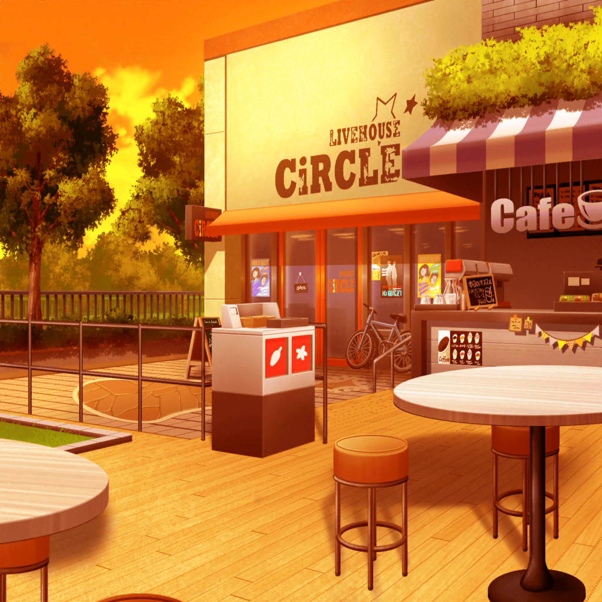

CiRCLE 外観
あこ
ねー、りんりん？ 最近変じゃない？
燐子
え……？
な、何か変なこと……しちゃった……？
燐子
自分では……普通にしてるつもりだけど……
おかしなことをしてたら……教えて欲しいな……
あこ
ちょ、ちょっと待って、りんりん！
あこ
変って、りんりんのことじゃないよ〜！
燐子
？ わたしのことじゃないの……？
あこ
りんりんは大丈夫！ 変なのは紗夜さん！
燐子
氷川さん……？
あこ
紗夜さん、なんだかおかしいと思わない？
今日の練習も調子悪そうだったし、何か悩んでるのかなー？
燐子
あ、そういえば……
自分のギターが……正確すぎるって……小声で言ってたよ
あこ
え？ 正確なのってすごいことじゃん！
あこ
むしろ、うらやましいよ〜〜！！
あこなんか、なかなか正確に叩けないから苦労してるのにな～
燐子
わたしは……ちょっと、わかるかな……
あこ
え？ わかるの、りんりん？
燐子
あこちゃんは……ピカソっていう画家……知ってる？
あこ
うん、ピカソなら知ってるよっ！
あこ
落書きみたいな絵を描く人でしょ？
不器用なのに絵が大好きなんだろうねっ、きっと！
燐子
そ、そういうわけじゃないよ……
ピカソって……普通に絵を描くと……ものすごく上手なんだ……
あこ
そ、そうなんだ！？
燐子
うん、お母さんが……言ってたんだけど……
ピカソは子供の頃から……絵がすごく上手だったんだって……
燐子
そこにあるものを、そのまま正確に絵にすることができたの……
でも、だからこそ、正確じゃない……自由な絵に憧れたんだ……
燐子
あの抽象画は……そんなピカソの憧れから生まれたものなんだよ
あこ
そっか。あの絵、落書きじゃなかったんだ……！
あこ
なんだかピカソってすっごくカッコいい人な気がしてきたよ〜！
あこ
あれ？ ってことは、紗夜さんが言ってたのって……？
燐子
う、うん、きっと氷川さんも……
自分にはないものに……憧れてるんじゃないかな……
燐子
誰よりも正確な演奏ができる……氷川さんだからこそ……
悩んでることが……あるんだと思うな……
あこ
そっか、すっごくわかったよ。
紗夜さんは今よりもっとカッコよくなりたいんだね！
燐子
う、うん、簡単に言うとそういうことかな……？
あこ
うんうん！
そういうことなら、紗夜さんの気持ちわかるよ〜！
あこ
あこも今よりもっともっと上手くなりたいもん！
おねーちゃんみたいなカッコいいドラマーが憧れだし！
燐子
うん、わたしも……もっと上手になりたいな……
あこ
えへへ、一緒にがんばろーね、りんりん！
あこ
よーし、あこも今度自由にドラムを叩いてみようっと！
燐子
え……？
あこ
ピカソみたいに自由に演奏ができたら、カッコいいよね！
あこのドラム、ますますパワーアップしちゃうんじゃない？
燐子
あ、あこちゃん……それはちょっと……
ドラムが自由だと……曲にならなくなっちゃうよ……